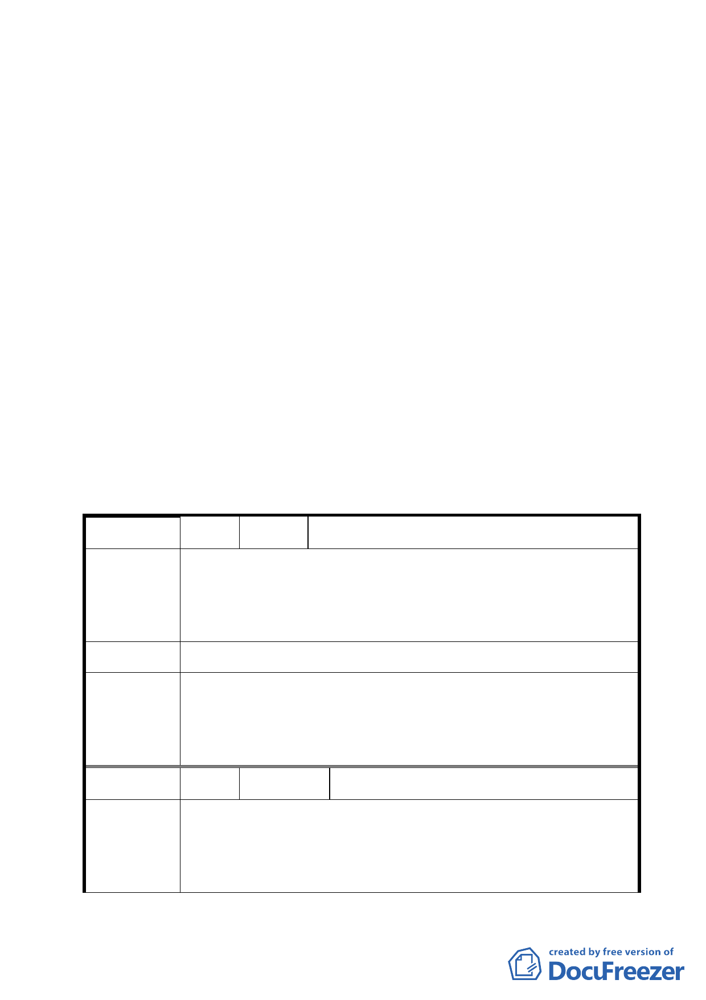

計畫法提本變更案及細部計畫，以作為後續實施都市計畫之
依據。
決議：
一、 主要計畫：照案通過。
二、 細部計畫：除於計畫書內載明公園用地增設自行車道，刪除
肆、計畫內容二、土地使用分區管制（一）之「惟得經臺北
市都市設計及土地使用開發許可審議委員會審議同意得予以
放寬，但最高不得超過 80％」，都市設計管制要點 五、夜間
景觀照明設計（一）之文字，另建議本案未來提送都市設計
審議時，應儘量考量地面層留設開放空間等內容外，其餘照
案通過。
「擬定臺北市南港區南港路 3 段以南，東新路以東，南港路 3 段 149 巷以西
商業區及道路用地細部計畫案」臺北市都市計畫委員會公民或團體所提意見
綜理表
編 號 １ 陳情人 王正財
南港區為文化沙漠區，僅以圖書館數目只有 2 家分館，比起文
陳 情 理 由 山區等其他地區，政府實在太不重視南港區民之文教需求，請
改進。
建 議 辦 法 南港區缺少文教設施，請多蓋圖書館等文教設施。
有關興建圖書館一節，查本案回饋公園面積 0.95 公頃，已規
委員會決議 定得做多目標使用，其中包含可設置圖書館；至於是否適宜興
建，後續再由市府研處。
編
號2
陳情人 交通部臺灣鐵路管理局
市府為國揚實業股份有限公司等擬定「臺北市南港區南港路 3
陳 情 理 由 段以南，東新路以東，南港路 3 段 149 巷以西街廓策略型工業
區土地為道路用地及商業區主要計畫案暨細部計畫案」辦理公
3